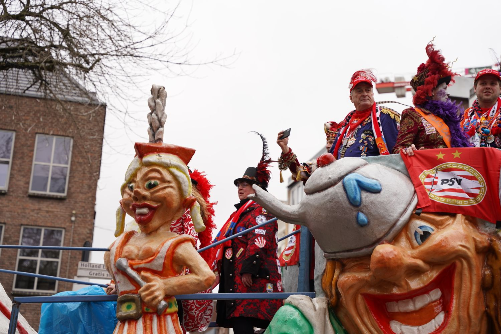
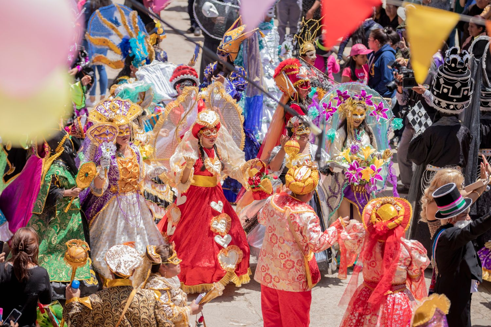
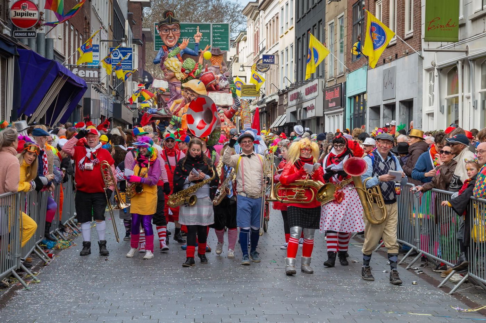
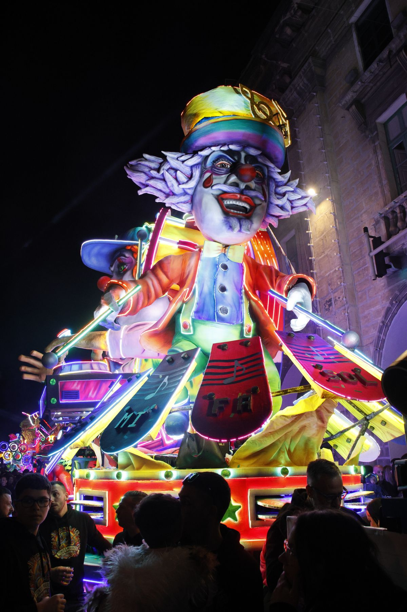
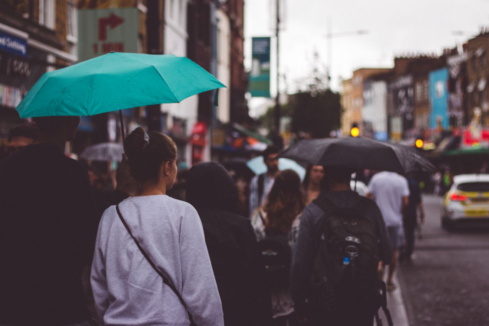
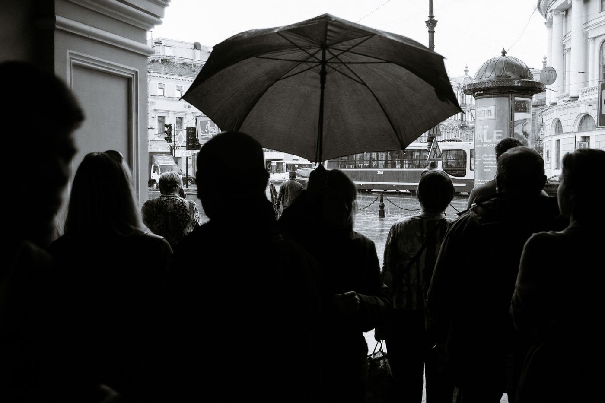

Parade coverage for krewes, media and brands — Mardi Gras and carnival season, New Orleans.
Parade files — brief, decisions, outcome
Three parades, told straight
Every commission is filed the same way: what was asked, what was decided — block by block — and what was delivered. The third file is a parade that never rolled. It stays in the record, because a record with the failures removed is advertising, not a record.
About the frames in these files. The photographs shown are reference photographs by the photographers credited under each frame (Pexels, full credits in CREDITS.md), standing in for the delivered galleries. The case text — positions, timings, counts — is the file itself, and every position named below is one the practice actually works from.
File 01 · Daylight · Full route
Krewe of the Brass Moon — the headline parade, end to end
ClientKrewe of the Brass Moon (programme & archive)
Parade / dateBrass Moon parade · Sat 14 Feb 2026
RouteUptown — St. Charles Ave to Lee Circle
StatusDelivered — 212 frames, day 6
The brief
The krewe's programme chair needed the full parade covered for the printed programme and the krewe archive: floats, bands, riders and crowd, from marshalling to the last float at Lee Circle — with at least one frame strong enough to carry the programme cover. One photographer, one side of the route, no second shooter on this booking.
The decisions — the block plan, printed
One photographer cannot be everywhere on a four-mile route, so the day is four positions, chosen the Friday before on the route recce and sent to the client before the fee was confirmed. Each move is made on foot, ahead of the parade, during band gaps.
Time
Block position
The light, and what it is for
11:30
Napoleon Ave marshalling
Open midday sun, crowd still thin. Costumes and riders' faces at their freshest — the portrait hour, before sweat and sun do their work.
13:00
St. Charles & Felicity St
Live-oak shade, dappled light. Exposure set for shade and held — floats crossing from sun to shade are where auto-exposure loses the frame.
15:30
Gallier Hall steps
The ladder rows. Throws come at camera height here; this is the block for crowd hands, beads mid-air, and the krewe's own families.
17:15
Lee Circle turn
Low sun directly behind the floats as they turn. Backlight and silhouette for the closing frames — the cover was always going to come from this block.

Position 2 — St. Charles & Felicity, 13:00Reference frame standing in for the delivered shade-block gallery: floats held at shade exposure as they cross out of the sun.Photo: Eren Alkış · Pexels (reference)

Position 1 — Napoleon Ave, 11:30Reference frame for the marshalling portraits: costume detail shot in the first hour, while the beadwork is still perfect.Photo: Alex Pereyra · Pexels (reference)

Position 3 — Gallier Hall, 15:30Reference frame for the ladder-row crowd work: bands and crowd at the throws block, shot from behind the barricade, always.Photo: FransA · Pexels (reference)
The outcome
212 frames delivered on day 6 of the standard 7-day window. The programme cover is the Lee Circle silhouette, taken from the position marked in the plan sent to the client before the parade — not a lucky frame, a planned one. Two frames the client expected are missing and the file says why: the krewe's second band was held at marshalling past the light at Position 2, and no honest frame of it exists from that block. The gap is noted in the delivered gallery rather than filled with a weaker parade's band.
“Odette sent us the block plan before she sent us a price. On the day, she was exactly where the plan said she would be — and the photograph our programme used was taken from the corner she had marked, in the light she had promised.”
Denise Landry — Programme Chair, Krewe of the Brass Moon · on this file
File 02 · Night · Flash discipline
Krewe of Midnight Magnolias — the night parade
ClientKrewe of Midnight Magnolias (social & archive)
Parade / dateMidnight Magnolias parade · Mon 16 Feb 2026
RouteUptown — St. Charles Ave, flambeaux-lit
StatusDelivered — 168 frames, day 5
The brief
A night parade lit by flambeaux carriers and float lighting, for the krewe's social channels and archive. The krewe's one condition, agreed in writing before the booking: the photographs must look like the night actually looked — no floodlit daylight faked at midnight.
The decisions
Flash discipline. No direct flash toward riders, and never toward horses or flambeaux carriers — a startled carrier is a safety incident, not a lighting problem. Where flash is used at all, it is bounced off the street surface at low power for crowd faces, and it is off entirely while any float is passing the block.
Exposure honesty. High ISO and slow shutter, worked deliberately: float lights dragged into streaks at 1/30, grain kept in the delivered frames and named in the gallery notes. Two positions only — night routes punish movement, because a photographer crossing between blocks in the dark is a photographer the crowd cannot see. Both positions were chosen for flambeaux stops, where the carriers pause and the light pools.
Crowd safety, stated plainly. Night crowds press closer to the route. The photographer works from behind the barricade at all times, keeps both exits from the block in view, and stops shooting — camera down — if a surge moves the barricade. No frame is worth being the reason a barricade line breaks.

Position 1 — flambeaux stop, St. CharlesReference frame for the night gallery: float light only, no flash, shutter dragged so the lamps burn the way they burned.Photo: Drinu Cutajar · Pexels (reference)
Position 2 — the roll between stopsReference frame: between flambeaux stops the route is float-light and streetlight only — the gallery keeps those frames dark, as delivered.Photo: Drinu Cutajar · Pexels (reference)
The outcome
168 frames delivered on day 5. Roughly a third of the take was unusable — night work at these settings always is — and the gallery notes say so, with the count. The krewe's social editor picked eleven frames; the two most-shared are flambeaux-stop portraits in which the only light is the carriers' own flame, exactly the look the brief asked for and the flash rules protected.
File 03 · Rained out · Kept in the record
Krewe of St. Cecile — the parade that never rolled
ClientKrewe of St. Cecile (family parade committee)
Parade / dateSt. Cecile family parade · Sun 15 Feb 2026 — postponed by weather
RouteAs planned: Marigny to the French Quarter edge
Status74 frames delivered · balance carried to the new date
The brief
A small family parade — children riding, grandparents throwing — booked as a half-day. The forecast on the Friday recce was honest about it: a front arriving Sunday morning, decision with the krewe and the city by 08:00 on the day.
What happened, and what was shot instead
The parade was postponed at 08:20. The crowd, however, had already come — families under the Claiborne Avenue overpass and along the covered sidewalks of Rampart Street, costumes under rain jackets, children throwing beads to each other across the puddles. With the committee's agreement on the spot, the half-day was worked there instead: the waiting, the umbrellas, the improvised mini-parade the children organised under the overpass at 11:00, two blocks long and entirely theirs.

Rampart Street, 10:40 — the crowd that came anywayReference frame for the rain-day gallery: colour under umbrellas on the covered sidewalks, shot from under the same cover.Photo: izi m. · Pexels (reference)

Under the overpass, 11:00Reference frame: the children's two-block parade, in monochrome in the delivered gallery — the day the colour rained off.Photo: Plato Terentev · Pexels (reference)
The terms, as actually applied
The rain terms printed on the About page were applied exactly as written, and they are repeated here because a term is only real once it has been used: the parade was rescheduled to the following Sunday; 50% of the half-day fee was carried forward to the new date; the frames shot on the rain day itself — 74 of them — were delivered within the week and charged as part of the original booking, not as a second one. No rebooking fee, no weather surcharge. The rescheduled parade rolled in sun, and its gallery is filed with this one, under the same booking reference.
The outcome
The committee's own verdict, minuted in their season report: the rain-day gallery is the one the families asked for prints from. A postponed parade is a disappointment; photographed honestly, it turned out to be the parade the krewe tells people about.
Your parade gets a file like these.
Block plan before the fee, terms applied as printed, and the record kept whole — including the weather. Booking for the 2027 season is open.